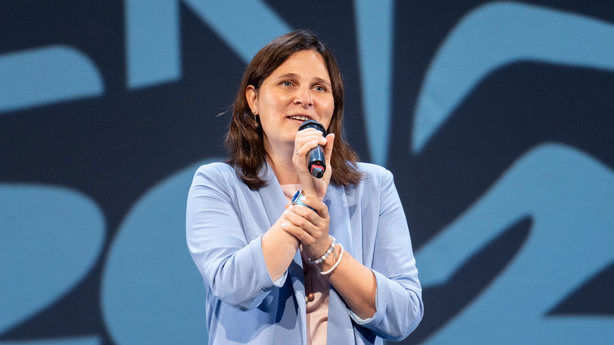

Светлана Красночуб
Исполнительный директор Фонда целевого капитала МФТИ
Читать главу →

01О герое
Исполнительный директор Фонда целевого капитала МФТИ — о том, как работают эндаументы, зачем университетам стрим-студии, и о другой стороне закрытых городов: их социальных законах и иерархиях.
02Ключевые тезисы
- Кампусная среда создает идентичность, если соединяет жизнь, учёбу, работу и горизонт выпускнической ответственности.
- Закрытая среда сильна концентрацией, но требует постоянного обновления, чтобы не превратиться в консервацию.
- Эндаумент даёт университету возможность мыслить не только бюджетным годом, а десятилетиями.
- Долгосрочная наука нуждается в устойчивых инструментах, потому что прорывы редко рождаются в коротком грантовом дыхании.
- Фонд может быть не только кошельком, но и социальным механизмом связи между людьми, идеями и университетскими структурами.
03Возьми с собой
Что применить
Думай не только о том, как закрыть текущую задачу, но и о том, какой длинный горизонт она создает.
Если хочешь поддержать сильную среду, вкладывайся не только деньгами, но и связями, опытом, вниманием и доверием.
Не бойся запускать пилоты: иногда маленькая университетская инициатива вырастает в федеральный проект.
Цитаты
Кампус и то, что все находится вместе, — это один из залогов успеха выпускников.
— Светлана Красночуб
Эндаумент — это инструмент, который помогает долгосрочному пути.
— Светлана Красночуб
Чем мы все начнем больше долгосрочно планировать, тем у нас больше шансов на прорывные вещи.
— Светлана Красночуб